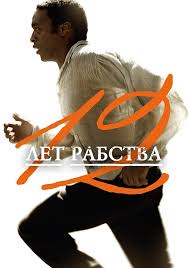

FILMS.UA - У нас завжди ви знайдете щось цікавеньке-
"12 Років Рабства (2013)"

- Гасло: «Надзвичайно справжня історія Соломона Нортапа»
- Рік: 2013
- Жанр: Фільм, Драма, Історичний, Біографічний
- Країна: США, Велика Британія
- Режисер: Стів Макквін
- Актори:Чіветел Еджіофор, Майкл Фассбендер, Бред Пітт, Бенедикт Камбербетч, Пол Дано, Пол Джаматті, Люпіта Ніонго, Сара Полсон, Келсі Скотт
- Біографічна драма розповість історію життя Соломона Нортапа. Чорношкірий чоловік, який з'явився на світ в статусі вільної людини. Це був 1807 рік. На території Нью-Йорка у його батька було фермерське володіння. У подальшому воно перейшло по спадковій лінії й самому Соломону. Тут він зміг отримати гарну освіту і навіть навчився грати на скрипці. Якось раз, Соломону було зроблено цікаву пропозицію. Це була робота скрипаля в Вашингтоні, за рахунок якої чоловік міг отримати солідний гонорар. У результаті, чоловік був відправлений до штату Луїзіана. Там інші закони, а тому темношкірі люди не мали ніяких прав. Будучи міцним фізично, він став ласим шматочком для перспективного власника. Вже незабаром викрадачі отримали за нього хороший гонорар, а Соломон мав змиритися з новим способом життя, але думки про повернення додому ніколи його не покидали.